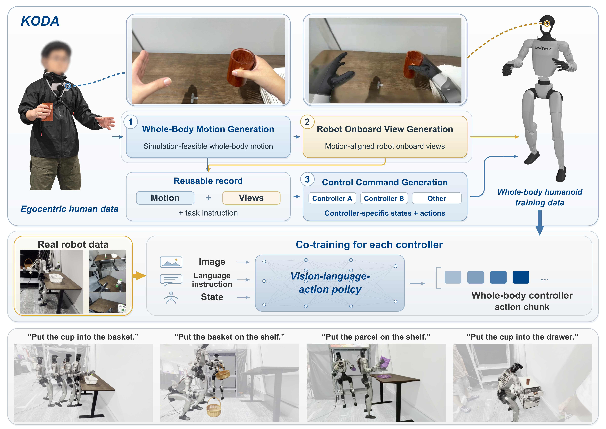
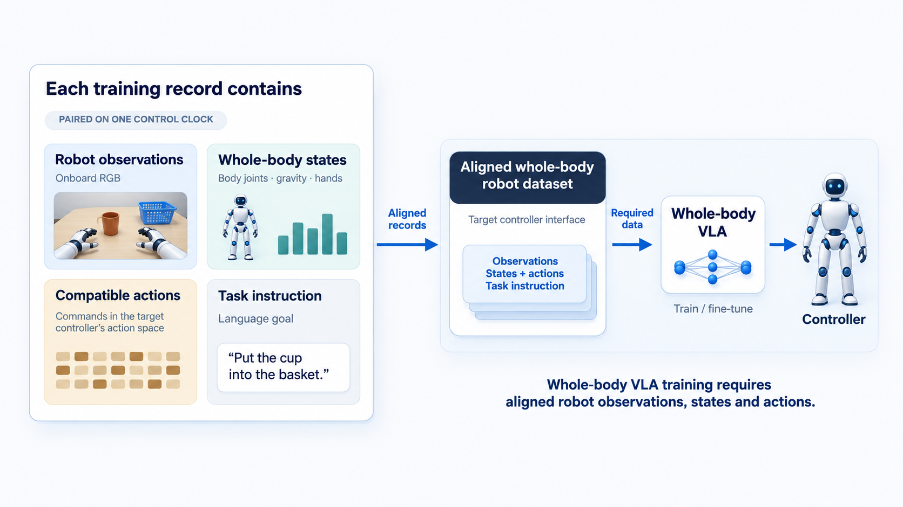

01 · CAPTURE
Observe the task
Record the human viewpoint, hand and head cues, and language goal with the demonstration.

KODA closes the interface gap between what a person sees and does during a demonstration and what a humanoid controller needs at training time.
We align human visual observations, head and hand motion cues, robot states, compatible actions, and task language on one control clock. The result is a reusable data conversion layer that can supplement different target controllers without rebuilding the model prior from scratch.
The central design choice is to make the conversion explicit: every aligned record can be inspected from source observation through controller-specific actions.

Record the human viewpoint, hand and head cues, and language goal with the demonstration.
Map visual motion into robot motion and robot views while preserving the original task context.
Project states and actions onto the target controller’s compatible action space and control clock.
Combine KODA records with robot demonstrations to train a controller-specific whole-body VLA.
This paper film introduces the motivation, conversion path, and controller-specific supervision behind KODA.
The short-form library is grouped by role: data processing clips, canonical KODA records, warehouse logistics demonstrations, and successful rollouts from the SONIC and HEFT whole-body controllers.
Short visualization of the KODA data processing and alignment pipeline.
Short visualization of the KODA data processing and alignment pipeline.
Short visualization of the KODA data processing and alignment pipeline.
Short visualization of the KODA data processing and alignment pipeline.
Short visualization of the KODA data processing and alignment pipeline.
Short visualization of the KODA data processing and alignment pipeline.
Short visualization of the KODA data processing and alignment pipeline.
Short visualization of the KODA data processing and alignment pipeline.
Canonical KODA record for whole-body reach and placement.
Canonical KODA record for object transfer with synchronized hand and robot views.
Canonical KODA record for contact-rich action grounded in a controller-compatible trajectory.
Canonical KODA record for multi-step rearrangement with the task instruction retained.
Successful whole-body controller rollout for whole-body reach and placement.
Successful whole-body controller rollout for object transfer with synchronized hand and robot views.
Successful whole-body controller rollout for contact-rich action grounded in a controller-compatible trajectory.
Successful whole-body controller rollout for multi-step rearrangement with the task instruction retained.
Successful whole-body controller rollout for whole-body reach and placement.
Successful whole-body controller rollout for object transfer with synchronized hand and robot views.
Successful whole-body controller rollout for contact-rich action grounded in a controller-compatible trajectory.
Successful whole-body controller rollout for multi-step rearrangement with the task instruction retained.
Autonomous humanoid manipulation in a warehouse-style logistics setting.
Autonomous humanoid logistics demonstration with cart interaction and transfer.
KODA is evaluated on a Unitree G1 with BrainCo hands across four loco-manipulation tasks. The same canonical records are reused to train both SONIC and HEFT policies with fixed robot data.
Macro-average task success under conditions covered by human demonstrations but absent from the robot demonstrations.
| KODA demos / task | SONIC OOD | HEFT OOD | SONIC ID | HEFT ID |
|---|---|---|---|---|
| 0 | 3.75% | 5.00% | 62.50% | 68.75% |
| 25 | 16.25% | 20.00% | 68.75% | 66.25% |
| 50 | 23.75% | 31.25% | 70.00% | 68.75% |
| 75 | 41.25% | 45.00% | 71.25% | 72.50% |
| 100 | 48.75% | 51.25% | 72.50% | 76.25% |
SONIC Robot-OOD macro-average success across the four alignment variants.
| Variant | Robot-ID | Robot-OOD |
|---|---|---|
| No alignment | 62.50% | 18.75% |
| Fixed offset | 63.75% | 23.75% |
| Motion reprojection | 66.25% | 37.50% |
| Full alignment | 72.50% | 48.75% |
Sampling-based command optimization (SCO) improves both in-distribution and out-of-distribution execution.
Lower is better. Position is reported in centimeters and orientation in radians.
| Stage / target | Direct | SCO | SCO + IK |
|---|---|---|---|
| Whole-body generation · Wrist position / orientation | 15.02 cm / 0.2046 rad | 3.03 cm / 0.1106 rad | 0.33 cm / 0.0296 rad |
| SONIC rollout · Wrist position / orientation | 61.50 cm / 0.1777 rad | 2.88 cm / 0.1292 rad | — |
| HEFT rollout · Wrist position / orientation | 19.61 cm / 0.0677 rad | 2.94 cm / 0.0552 rad | — |
KODA makes the data processing chain visible: source demonstrations become aligned records, then controller-specific training data.

Onboard RGB and the visual context available to the target policy.
Body joints, gravity, and hand state expressed in the target embodiment.
Commands projected into the controller’s action space for execution.
The language goal that keeps the record usable for instruction following.
Citation details will be updated once the paper metadata is final.
@article{koda2026,
title = {KODA: Kinematics--Observation Data Alignment for Humanoid Learning},
author = {Zibo Zhou and Yueru Chen and Junsong Wu and Weiji Xie and Qingyao Xu and Sheng Yin and Siheng Chen and Chenjia Bai},
year = {2026},
note = {Project page}
}